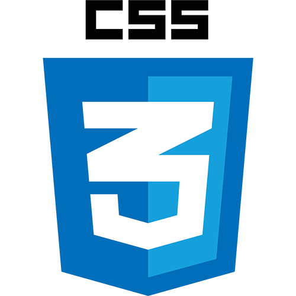
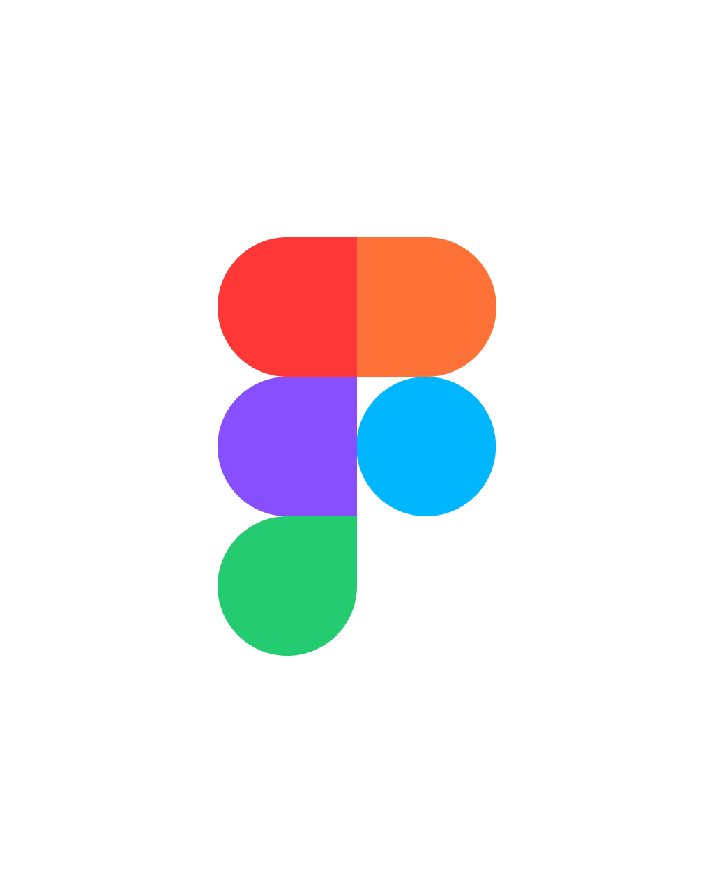

resume
← back homeExperience
Download resume ↓Redesigned "Past Due Defender" to surface real-time eligibility status, replacing a static "active" label that misled customers about a safeguard meant to protect their credit. Owned end-to-end design workflow from ticket to handoff: competitor research, Figma drafts, AI-assisted iteration in Claude Design, and stakeholder review before passing to engineering. Synthesized customer support call recordings and a comparative usability test into design priorities across two product redesigns.
Designing and testing an educational game teaching K-12 students core CS concepts through role-based gameplay. Built pre/post survey and interview instruments in Qualtrics to measure learning gains and shifts in CS interest. Managing IRB documentation (REDCap, DocuSign) for a research study involving minors.
Prototyping a degree-planning Chrome extension in Figma, unifying degree tracking tasks for the entire UT Austin student body (~50,000 students). Synthesizing complex degree requirements into scannable designs based on student pain points.
Verified alt text, tags, and document structure for screen reader compatibility across 48 course materials, supporting a course of 149 students.
Designed interfaces for StemUp, a posture-tracking app, translating sensor data into a plant-based visual metaphor grounded in user behavior. Synthesized feedback from 15 user interviews into a pitch deck; awarded Best Design out of 18 teams. Collaborated across a cross-functional team of 9 spanning design, computer science, and business.
Projects
Ran an end-to-end research pipeline: secondary research, recruitment screener, study plan, discussion guide, usability interviews, and affinity diagramming. Identified trust and verification as core friction points by following an unprompted participant detail that reframed the entire research question.
Converted a company-provided GSA process spreadsheet into guided form layouts and a client-facing dashboard, reducing reliance on manual tracking and email. Designed 6 technical form pages with conditional logic paths, file uploads, and radio button flows.
Read the case study →Conducted 6 user interviews and synthesized 100+ notes into 3 key insights via affinity diagramming.
Read the case study →Education
Bachelor of Science, Informatics · Bachelor of Arts, Psychology
Graduating May 2028
Skills & Certifications

CSS
Figma Miro Photoshop InDesign WordCertificate: CITI Program Human Research Social/Behavioral Researchers
Awards: Premio de Plata 2022, scored in the 94th percentile for National Spanish Examinations